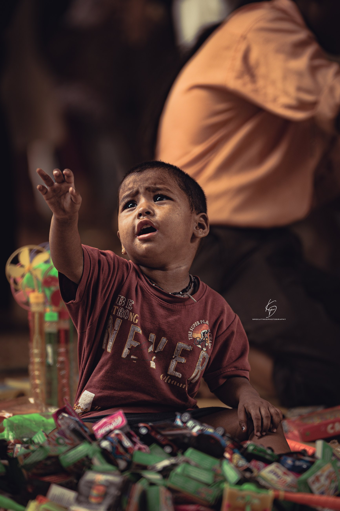
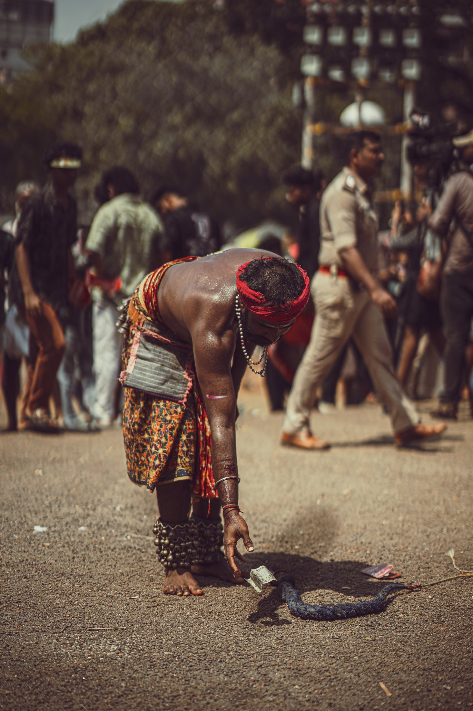
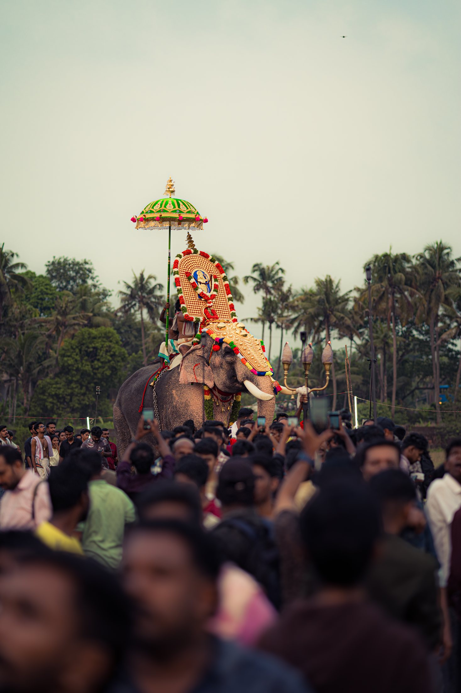
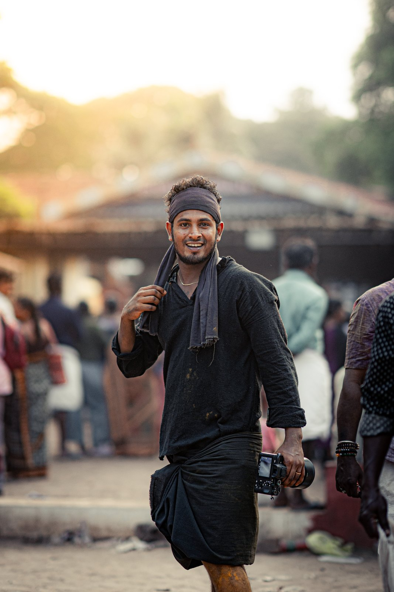

KD Photography · Thrissur, Kerala
Body I
പൂരം
Thrissur · 2026 · 70–200mm
Ten thousand people, no lighting, no second take. At 200mm and f/2.8 the crowd falls away and there is only the animal, the gold, the drummer's hand.
The festival is not a subject you arrange. It happens at its own speed, in its own dark, and it does not wait. What I do is stand in the one place where the light will land, and hold the long lens open, and wait for the frame to come to me.

Body II
മുഖങ്ങൾ
85mm · f/1.4 · wide open
One lens. One stop. Everything behind the eyes goes to nothing.
I shoot portraits with the 85 at f/1.4 because it is the closest a camera comes to how attention actually works — one face, sharp, and the entire world around it soft and unimportant. I do not light them. I find where the light already is and I put the person there.

Body III
രാത്രി
ISO 6400 · fire · no flash
Most of what I photograph happens between midnight and first light.
Kerala's rituals belong to the dark. I have never used a flash at one — it would be a lie, and it would stop the thing I came to see. So I work at ISO 6400 with the lens wide open and let the fire do what fire does. The grain is not a fault. It is the room.
Every frame · drag to scroll

തൃശ്ശൂർI am from Thrissur, which means the festival was never an assignment. It was the calendar.
I did not come to this through a studio or an apprenticeship. There was no one to hand me a first job. What there was, instead, was a place where the most photographed event in Kerala happens every year at the end of my road — and years in which I could not afford to be anywhere near it with the right lens.
So I learned it the slow way. Standing in the same spots. Watching where the light lands at four in the morning. Learning which mahout will let you close and which will not. That is not a technique you can buy, and it is the only reason my frames are where they are.
I work at the long end, wide open, in the dark, without flash. I am after the one face the crowd is hiding.
Open to staff, assistant, editorial and assignment work. Happy to shoot a test.